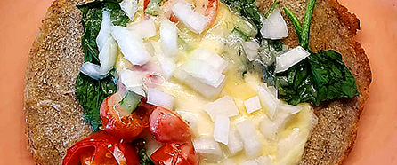

PIZZA CASERA
👉Mezclar 1/2 taza de agua tibia con 25 g de levadura fresca y 1 cdita de azúcar. 👉Dejar reposar 10'. 👉En un bowl mezclar 500 g de harina 000 con 1 cdita de sal. 👉Formar una corona y agregar en el centro la levadura y 4 cdas de aceite de oliva. 👉Mezclar todo y de ser necesario agregar un poco mas de agua tibia hasta lograr la consistencia deseada. 👉Dejar reposar en ambiente cálido por 15'. 👉Transcurrido ese tiempo, dividir la masa en 3 bollos y estirar sobre placas. 👉Dejar reposar estas por otros 15'. 👉Llevar a horno caliente por 5' y luego agregar la salsa. 👉En este punto podes frezarlas o dejarlas que hagan piso y agregarles quesito. 👉La cocción se completa cuando el mismo esta derretido. 😊La porción es de 2 y te sugiero hacerte una entradita con vegetales para sumar fibra y lograr mayor saciedad.
SOPA CREMA DE ARVEJAS
👉Comen 2 pican 3👈
🍵Remojar (8hs) y hervir en 1 litro de agua 250 gramos de arvejas hasta que estén blanditas. 🍵En una sartén con un poco de aceite de oliva rehogar 1 cebolla y 1 tomate sin piel ambos cortados en cubos. 🍵Mezclar ambas preparaciones y mixear. 🍵Servir con un poquito de sal, pimienta y queso. . Si dejan un poco para el otro dÃa, el sabor se concentra aún más 🤤. Nada mejor que una sopita para reconfortarnos el cuerpo.
DOSAS VEGETARIANAS
De lentejas y arroz integral fermentados
🧇Remojar durante 24 hs 1 taza de arroz integral y 1/2 taza de lentejas. 🧇Transcurrido este tiempo, descartar el agua de remojo y mixear con 2 tazas de agua y cdita y media de sal. 🧇Dejar fermentar a temperatura ambiente la preparación durante otras 24 hs cubierta con un repasador limpio. 🧇Luego de este tiempo, mezclar bien la preparación. 🧇En una sartén (fuego medio) caliente con un poquito de aceite o ghee colocar una parte de la preparación como si hiciéramos panqueques (aunque el procedimiento de cocción no es igual). 🧇Dejar que se dore bien de un lado antes de darlo vuelta (ojo, no es tan rápido como un panqueque, lleva tiempo y paciencia, pero es agarrarle la mano). 🧇Por último, rellena con lo que quieras! .
PASTEL DE PAPA DE ARVEJAS
👌🏽Una buena forma de sumar legumbres es en preparaciones clásicas, ideal para los que aún se les resisten! 😝
👉🏽Vas a necesitar (sin cantidades, pensado como el tradicional) cebolla, ajà rojo, ajo, lentejas remojadas y cocidas, cebolla de verdeo, aceitunas y queso crema
👉🏽Rehoga la cebolla, el ajo y el ajà rojo, en este punto condimenta con sal, pimienta, pimentón, cúrcuma, curry, comino y orégano (poco). Agrega las lentejas y cocina un poco más. ¡Antes de apagar el fuego súmale 1 o 2 cdas de queso crema, la cebolla de verdeo y las aceitunas ambas picadas bien finitas! Proba y rectifica en caso de que sea necesario alguno de los condimentos
👉🏽Por último, al puré de papa no le pongas nada, solo pisa y suma sal y un chorrito de aceite. Arma el pastel y llévalo a horno fuerte hasta que veas doradito el puré. Servilo con queso cremoso encima o en hebras!
CALABAZA RELLENA
👉🏽Compren un zapallo o una calabaza, córtenla por la mitad, ahuéquenla retirándole las semillas y cocÃnenla a horno medio hasta que al pinchar con un tenedor esté blandita 👉🏽Para el relleno rehoguen cebolla, morrones de varios colores, y vegetales cómo zucchini todo cortadito en cubos. A esto le agregan (previamente remojados y cocidos) 1/2 taza de lentejas o garbanzos o porotos y choclo. Cocinen bien todo hasta que la cebolla esté transparente y con eso rellenan, pero antes de sacarla del horno, le ponen quesito y 🤤
FALAFEL ARGENTO
Siguiendo la hermosa receta de @paulinacocina prepare estas albóndigas de garbanzos que son perfectas para hacer que los chicos incorporen legumbres a su alimentación y porque no también para adultos renegados! ✨Ingredientes: 2 tazas de garbanzos (previamente remojados 8 a 12 hs y cocidos, si querés ver cómo, busca el vÃdeo donde hablo de eso), 1 taza de harina, 1/2 cebolla en cubitos, 1 ajo picado, un puñadito de perejil y verdeo picado (si conseguÃs cilantro mejor), un poquito de pan rallado y el jugo de 1 limón. ✨Procedimiento: procesar los garbanzos y agrega el resto de los ingredientes. Amasar hasta integrar todo. Con las manos mojadas, formar bolitas y pasarlas por pan rallado. Cocinar en una sartén con aceite bien caliente hasta que estén doradas (no es necesario sumergirlas en aceite, en la foto se ve la cantidad que use). Servir con alguna ensaladita 🧡
🍔Burgers de quÃnoa🍔
(3 ingredientes y condimentos)
👉Remojar 1/2 taza de quÃnoa durante 10 hs. 👉Hervir con 3 tazas de agua (fuego alto hasta el hervor y después al mÃnimo hasta que se haya consumido toda el agua).
👉Con la quÃnoa tibia agregar 1/2 cebolla cortada bien chiquita y 1/2 zanahoria rallada ambas previamente rehogadas. 👉Integrar bien todo y condimentar con pimentón dulce, curry, cúrcuma y sal, todo a gusto.
👉Con las manos húmedas, formar bolitas y aplastarlas para darles la forma de medallón. 👉Cocinar en horno moderado sobre placa con aceite o ghee hasta que haga piso de un lado, dar vuelta y terminar la cocción cuando estén doraditas.
🥕Importante: la quÃnoa la tenes que cocinar hasta que el agua se haya consumido, y se empiece a pegar al fondo de la olla.